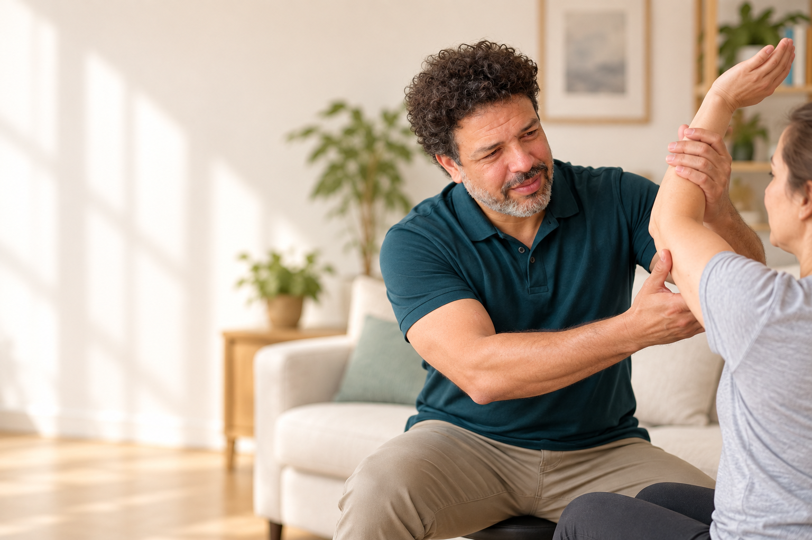

A · Clara y directaPrioriza ubicación, propuesta y contacto inmediato.
Atención en Neuquén Capital
Kinesiología en casa, con un plan pensado para vos
Atención a domicilio para adultos y adultos mayores. Conversá con Ramiro y coordiná una evaluación inicial según tu situación.
Atención particularEn tu domicilioNeuquén Capital

Primero conversamosContanos qué necesitás y resolvemos dudas iniciales.
Evaluación en domicilioLa primera visita permite conocer el contexto y acordar objetivos.
Seguimiento personalizadoEl abordaje se ajusta a la evolución y posibilidades de cada persona.
Cómo empezar
Un primer paso simple
Si no sabés si este servicio es adecuado, usá la guía de orientación antes de escribir.
01 · Elegí la situación que mejor describe tu consulta
02 · Revisá la orientación inicial
03 · Escribí por WhatsApp si querés coordinar